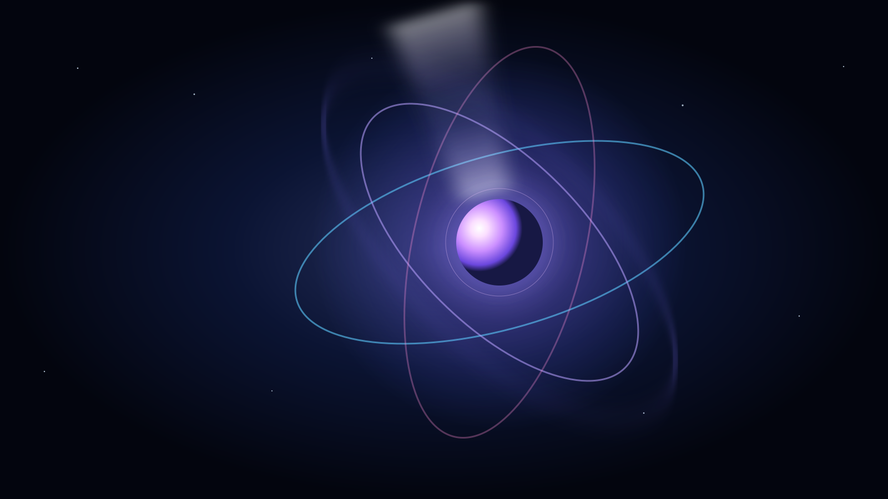
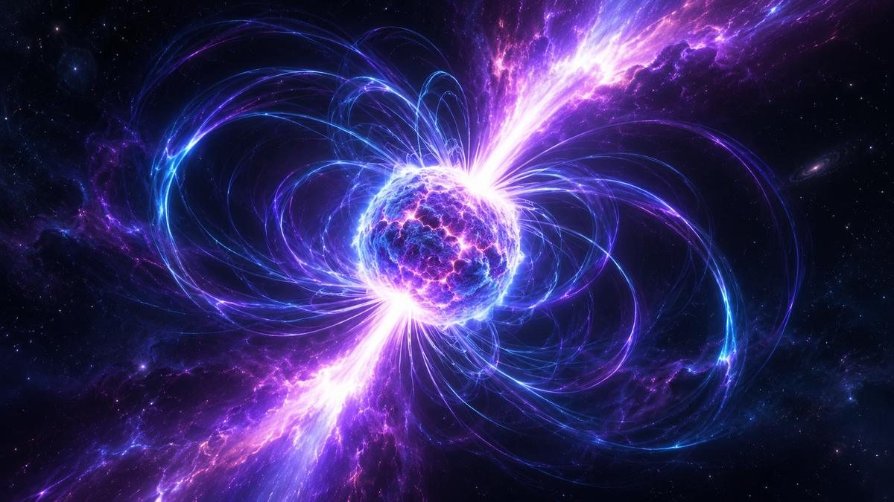

ROZDZIAŁ 33 · ASTROFIZYKA EKSTREMALNA
Gwiazda, która nie zna umiaru.
Wyobraź sobie martwą gwiazdę zamkniętą w kuli wielkości miasta. Jej pole magnetyczne jest tak silne, że potrafi zniekształcać zachowanie materii i uwalniać energię w gwałtownych rozbłyskach.
NIE KAŻDA GWIAZDA UMIERA PO CICHU
Pozostaje kula materii, w której nie ma już miejsca na zwyczajność.
Gdy masywna gwiazda kończy życie, jej jądro może runąć pod własnym ciężarem. Protony i elektrony łączą się, tworząc materię bogatą w neutrony. Po gwieździe, która przez miliony lat oświetlała otoczenie, zostaje obiekt o promieniu zaledwie kilkunastu kilometrów. A jednak może on mieć masę większą od masy Słońca.
To gwiazda neutronowa. Magnetar jest jej szczególnym rodzajem: obiektem, którego ogromna energia magnetyczna wpływa na promieniowanie, skorupę i otaczającą plazmę. Jego powierzchniowe pole magnetyczne bywa rzędu 10¹⁴–10¹⁵ gausów. Pole Ziemi przy powierzchni ma około pół gausa. Różnica nie jest już kwestią skali — to niemal inny świat fizyki.
NAJPIERW ZAUWAŻONO BŁYSKI
Obiekt, który przez lata nie chciał pasować do znanych modeli.
Detektory rejestrowały tajemnicze, powtarzające się rozbłyski promieniowania gamma i rentgenowskiego. Źródła nazywano soft gamma repeaters (SGR). Inne niezwykłe gwiazdy oznaczano jako anomalous X-ray pulsars (AXP). Emitowały więcej energii, niż łatwo dało się wytłumaczyć samą utratą energii obrotowej.
Wyjaśnieniem okazała się energia zmagazynowana w ekstremalnie silnym polu magnetycznym. Kiedy pole powoli się zmienia i skręca, dostarcza energii do magnetosfery. Czasem napina też skorupę gwiazdy. Wtedy spokojny obiekt może stać się źródłem gwałtownego błysku.
KIEDY NAWET MATERIA GWIAZDY MUSI USTĄPIĆ
Magnetar może doświadczyć własnego trzęsienia gwiazdy.
Linie pola magnetycznego nie są sztywnymi drutami. To sposób przedstawiania kierunku i geometrii pola. Wokół magnetara konfiguracja pola może być bardzo silnie skręcona; prądy w otaczającej plazmie i zmiany we wnętrzu gwiazdy mogą prowadzić do utraty stabilności.
Silne naprężenia mogą doprowadzić do nagłego przemieszczenia materii i zmiany układu pola.
Rekonfiguracja pola może przyspieszać cząstki i wywoływać silną emisję rentgenowską oraz gamma.
Wiele magnetarów obraca się raz na kilka sekund. Ich rozbłyski mogą mieć pulsujący, okresowy ogon.
DZIEŃ, W KTÓRYM KOSMOS UDERZYŁ W DETEKTORY
Rozbłysk tak potężny, że jego ślad dotarł aż do ziemskiej jonosfery.
27 grudnia 2004 roku magnetar SGR 1806−20 wyemitował jeden z najpotężniejszych zaobserwowanych wielkich rozbłysków. W początkowych ułamkach sekundy uwolnił ogromną ilość promieniowania gamma; później pozostał słabnący, pulsujący ogon.
Energię rozbłysku oszacowano na około 2 × 10⁴⁶ erg przy założeniu emisji izotropowej. Wydarzenie zaburzyło górne warstwy ziemskiej atmosfery, mimo olbrzymiej odległości źródła. To nie sensacyjna metafora, ale wynik pomiarów. Źródło: NASA NTRS.
Czasem przez setki lat nie dzieje się niemal nic. A potem magnetar w jednej chwili ujawnia energię, która zmienia obraz całego nieba wysokich energii.

ATLAS SOLARIS / 33 / WIZJA ARTYSTYCZNAMagnetar podczas wyobrażonego wielkiego rozbłysku. Łuki pola i jasne smugi przedstawiono symbolicznie — to artystyczna interpretacja, nie fotografia ani wierna wizualizacja promieniowania gamma.
PIĘĆ RÓŻNYCH ŚWIATÓW MAGNETYZMU
Między ziemskim kompasem a magnetarem jest przepaść czternastu rzędów wielkości.
Długości słupków pokazują tylko porównanie logarytmiczne; wartości są przybliżone, a poszczególne obiekty mogą znacznie się różnić.
DOTKNIJ GRANIC FIZYKI
Zamień się w obserwatora najbardziej namagnesowanej gwiazdy.
Wybierz parametry magnetara. Zobacz schemat pola i rozbłysku, zmierz skalę zjawiska i sprawdź, co wynika z przybliżonych zależności fizycznych.
Zmiany pola magnetycznego otaczają gwiazdę neutronową. Rozbłyski nie są obecnie aktywne.
Granice modelu. Rysunek nie odtwarza przestrzennej magnetohydrodynamiki ani widma promieniowania. * Energia pola liczona orientacyjnie jako B²R³/6 dla kuli o promieniu 12 km i jednorodnego pola B; to skala zasobu, a nie energia ani moc konkretnego rozbłysku. ** Względny strumień opiera się wyłącznie na prawie 1/r² dla źródła izotropowego. Naprężenie i rodzaje rozbłysków są przełącznikami demonstracyjnymi, a nie prognozą aktywności.
NAJDALSZE LABORATORIUM CZŁOWIEKA
Nie możemy zbudować magnetara. Możemy jednak czytać jego światło.
Magnetary pomagają sprawdzać, jak zachowuje się materia przy olbrzymich gęstościach, co dzieje się z promieniowaniem w polach nieosiągalnych na Ziemi i skąd biorą się najbardziej gwałtowne zjawiska w Drodze Mlecznej. Astronomia staje się tu doświadczeniem: zamiast dotykać gwiazdy, odczytujemy jej rytm, błyski i zmiany widma.
Po pulsarze, który odmierzał czas, poznaliśmy gwiazdę, która potrafi ten spokojny rytm przerwać. To kolejny krok ATLAS SOLARIS w głąb fizyki ekstremalnej.